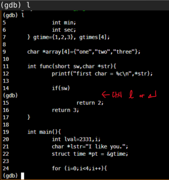
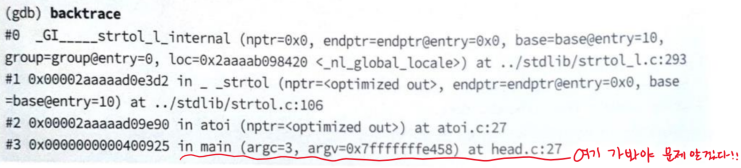
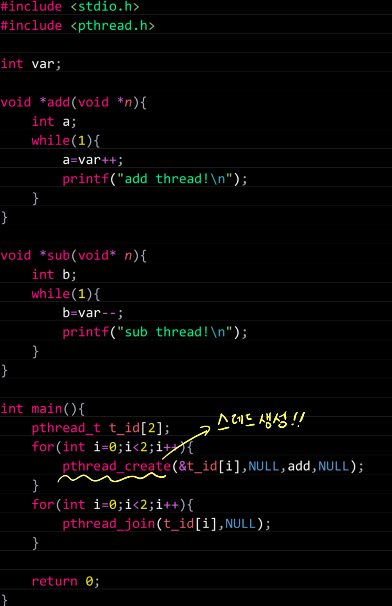
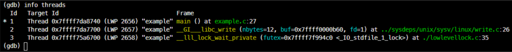

gdb
gdb
The GNU Debugger (GDB) is a portable debugger that runs on many Unix-like systems and works for many programming languages, including Ada, C, C++, Objective-C, Free Pascal, Fortran, Go, and partially others. - wikipedia
How to use gdb?
가령 example.c와 같은 소스 코드가 있다면
$ gcc -g example.c -o a.out
-g 옵션을 붙이고, 최적화 옵션 사용 금지!
컴파일 후, 다음의 명령어로 gdb를 실행한다.
- 가장 기초적인 실행 방법
$ gdb [binary] - PID를 이용한 실행 방법
$ gdb [binary] [PID] - gdb with Args
$ gdb --args [binary] [arg1] [arg2] # 혹은 $ gdb [binary] # 실행 후 (gdb) r [arg1] [arg2] - gdb with LD_PRELOAD
$ LD_PRELOAD=/media/libHybridCL.so gdb [binary] # 혹은 $ gdb [binary] # 실행 후 (gdb) set env LD_PRELOAD /media/libHybridCL.so # SET!LD_PRELOAD 확인
(gdb) show env LD_PRELOAD # 명령 LD_PRELOAD=/media/libHybridCL.so # 확인
core 파일을 이용한 디버깅
- 코어 파일: 프로세스에 예외 발생 시 프로세스 이미지
1. core file 허용 size check
$ ulmit -a # 현재 ulimit 상태 보기
....
-c: core file size (blocks) 사이즈
....
# unlimited로 만들어버리자
$ ulimit -c unlimited
- 너무 작으면 저장이 안되니, unlimited로 만들어버리자
2. Seg Fault 등이 나는 예외 상황 유발 바이너리 디버깅 with core file
# 우선 먼저 바이너리가 예외 상황이 나야 core file이 생성된다.
$ ./a.out
[1] 1233 segmentation fault (core dumped) ./a.out
# 위 (core dumped) 출력으로 core file 생성 확인
이제 corefile로 gdb 실행한다.
$ gdb [binary] [core_file]
ex)
$ gdb ./a.out ./core
- 실행 시, seg fault 상황으로간다.
엔터: 이전 명령어 반복
엔터는 이전 명령어를 반복 입력 해준다
tab: 자동완성
tab 키를 누르면 자동 완성 됨
# num 변수 값을 출력하고 싶다면,
$ (gdb) p nu 까지 치고 tab 키 누르면...
...
$ (gdb) p num <- 으로 자동완성
l(list): 소스 내용 출력
l(list): 소스 내용 출력

현재 어디까지 실행 됬는지 알고 싶다면 bt를 이용하자
l [행 번호] : 특정 행 보기
l [함수 명] : 특정 함수 코드 보기
l - : 출력된 행 이전 행들 출력
l 1,7 : 1~7 line 소스 출력
l file.c:func : file.c 파일 내, func 함수 소스 코드 출력
l file.c:10 : file.c 파일 내, 10 line 소스 출력
set listsize 20 : l 명령에서 보여주는 코드 20행으로
c: 다음 bp 까지 수행
b : 브레이크 포인트
b [함수명] : 함수에 bp
b main : main 함수에 bp
b 10 : 10행에 bp
b file.c:main : file.c에 main 함수에 bp
b file.c:10 : file.c에 10 line에 bp
b +2 : 현재 행에서 +2 행에 bp
b -2 : 현재 행에서 -2 행에 bp
b 10 if var == 0 : 10 행에 bp 걸되, var이 0 일 때 작동
b 10 if var > 0 : 10 행에 bp 걸되, var > 0 일 때 작동
condition [b번호] var == 1 : b번호 bp 조건을 var == 1 로 바꿈
- b 번호는 info b로 얻을 수 있음
condition [b번호] func(i) > 5 : func(i)의 값이 5보다 클 때로 바꿈
info b : 모든 bp 정보 보기
ignore [b번호] 100 : b번호 bp가 100번 지날 때까지 무시
- 주로 for文 내에 bp가 있는 경우 유용
rb fun* : fun*에 해당하는 모든 심볼에 bp 설정
rb ^fun : fun으로 시작하는 모든 심볼에 bp 설정
rb TestClass:: : TestClass에 해당하는 모든 심볼에 bp 설정
clear : bp 지우기
cl 10 : 10행 bp 제거
cl file.c:func : file.c의 func함수에 있는 bp 제거
cl file.c:10 : file.c의 10행 bp 제거
cl main : main 함수 걸려있는 bp 제거
d : 모든 bp 제거
d 1 : bp 1 제거
disable br : 모든 bp 비활성화
disable br 1 3 : 1, 3번 bp 비활성화
enable br : 모든 bp 활성화
enable br once 1 : 1번 bp 활성화 1번하고 다음 부턴 비활성화
enable br delete 1 : 1번 bp 활성화 하고 제거
r: 재시작
k: 프로그램 종료
s(step) : vs에서 f11
- Visual Studio에서 f11은 프로시저 내부로 들어감
s 6 : step 6번 수행
si : assembly inst level f11
n(next) : vs에서 f10
- Visual Studio에서 f10은 프로시서 내부로 안들어가고 한줄 씩 실행
n 6 : next 6번 수행
ni : assembly inst level f10
u : for문 빠져 나오기
finish : 함수 끝 시점으로 가기
return : 함수의 나머지 부분 수행하지 않고 바로 return
return 123 : return 123 주고 바로 return
watch [변수] : 변수에 값이 써질 때 브레이크 걸림
rwatch [변수] : 변수가 읽힐 때 브레이크
awatch [변수] : 변수가 읽거나 쓰거나 하면 브레이크
info locals : 지역변수 모두 출력
info variables : 전역변수 모두 출력
info registers : 레지스터 모두 출력
info all-registers : 거의 모든 레지스터 출력
p(print) [변수] : 개별 변수 값 한번 출력
p [함수] : 함수 주소 값 한번 출력
p $[레지스터명] : $레지스터 값 한번 출력
p/출력형식 [변수] : 지정한 출력 형식으로 변수 값 출력
- t: 2진수
- o: 8진수
- d: signed 10진수
- u: unsigned 10진수
- x: 16진수
- c: 최초 1Byte 문자형 출력
- f: 부동 소수점 값 형식으로 출력
- a: 가장 가까운 심볼의 오프셋 출력
display [변수] : 변수 값 계속 출력
undisplay [display 번호] : 해당 번호 display 띄우지 않음
set variable [변수]=[값] : gdb 실행 중 변수에 값 임의 셋
bt : backtrace
층층히 쌓이는 스택의 변수나 함수 정보가 저장되는 메모리 공간

main함수 내 27번 라인에서 문제가 생긴 것 확인 아래와 같은 명령들이 backtrace와 자주 쓰임
(gdb) bt # backtrace 명령
(gdb) frame 3 # frame 3번 main 함수로 간다.
(gdb) f 3 # 동일 명령어
(gdb) up # 윗 레벨 프레임 이동
(gdb) down # 아래 프레임 이동
(gdb) info frame # 현재 프레임 정보
멀티스레드 디버깅

- break를 pthread_create() 함수에 의해 스레드들이 생성 직후 적당하다.
- pthread_join() 이후에는 break 설정 안됨
- pthread_join() 함수 호출 시, gdb의 현재 스레드인 main스레드가 잠들어 버리기 때문에 진행 안됨
다음 예시 처럼 한다
$ (gdb) ./a.out
$ b pthread_create # pthread_create() 함수 브레이크
$ r # start!
$ n..n..finish
$ info threads # 스레드 정보 얻기
 1번 스레드: main 스레드 2,3 번 스레드는 각자 할 것 하고 있음
# info threads 로 스레드 정보 얻은 후
$ (gdb) b [라인 번호] thread [브레이크 될 스레드 번호]
# 스레드 전환
$ (gdb) thread [스레드 번호]